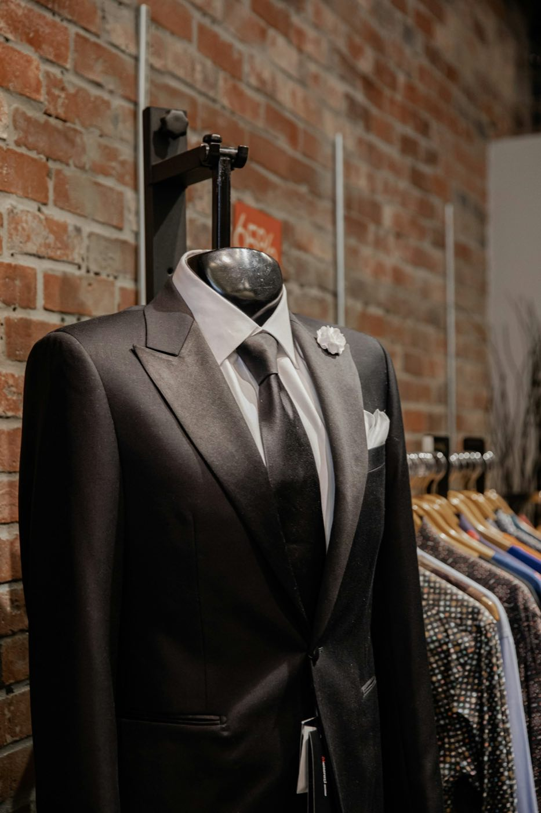
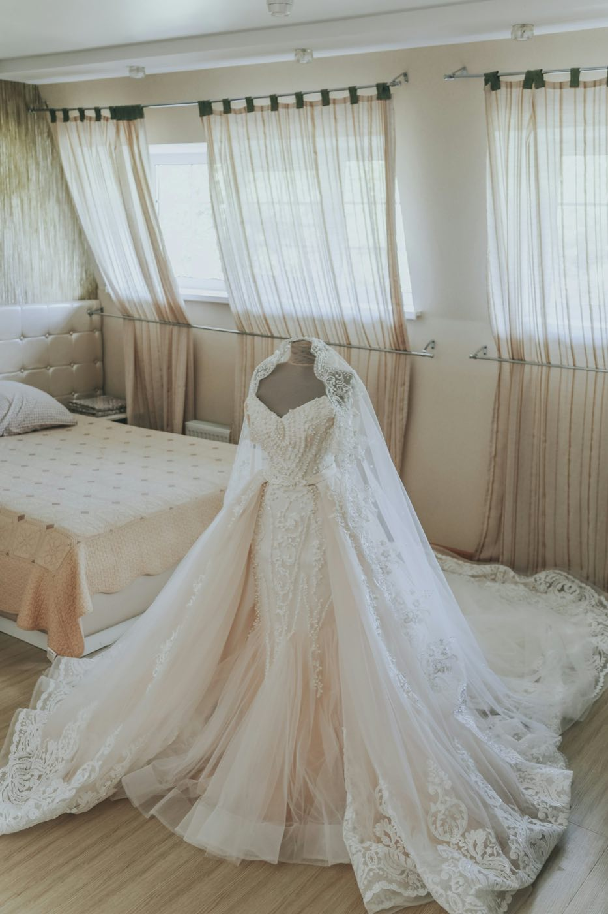

5.0★★★★★
426 Google
reviews
at time of preview
Tailoring & alterations · 228 Darling St, Balmain
Complex alterations, precisely done.
Suits reshaped, wedding gowns fitted, formalwear made right for the day. Missed us during the day? Leave a fitting request any time — the shop calls you back.
The fit guide
What can be altered?
Tap the points on a suit or a wedding gown to see what a fitting looks at — then send a request for exactly that.
Suit · shoulders
Shoulders
Assessed at the fittingTap a numbered point to see what can be altered.
Request a fitting for thisPrecision Tailoring

5.0 across 426 Google reviews.Rating at time of preview